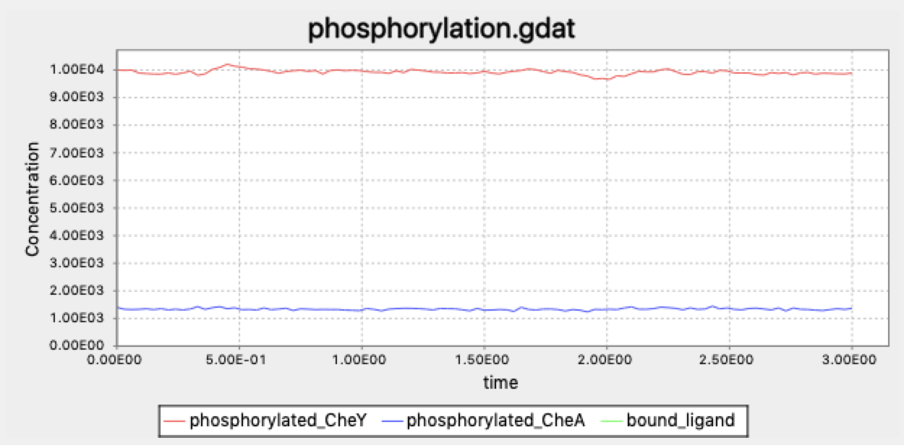
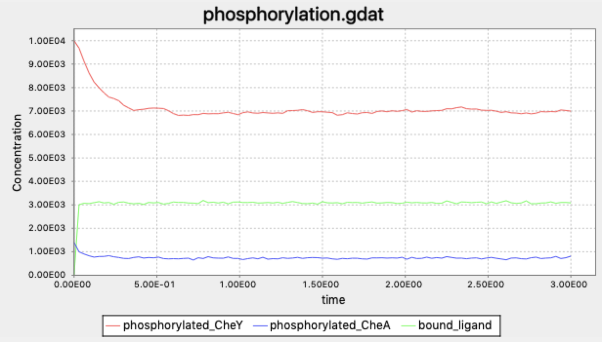
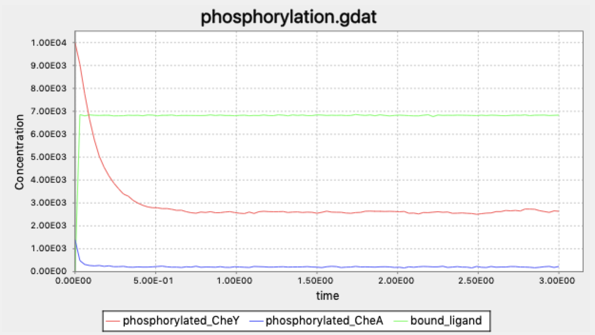

A Biochemically Accurate Model of Chemotaxis
Transducing a signal to a cell’s interior
In the previous two lessons, we discussed how a cell recognizes an extracellular signal when receptor proteins on the cell’s surface bond to ligands, and how to model the reversible ligand-receptor reaction using stochastic simulation via the Gillespie algorithm. We now turn to the question of how the cell conveys the extracellular signal it detects via ligand-receptor bonding to the cell’s interior in order to produce an action via the process of signal transduction. For example, if E. coli senses an increase in the concentration of glucose, meaning that more ligand-receptor bonding is taking place at the receptor that recognizes glucose, how is E. coli able to change its behavior as a result of this increased bonding?
The engine of signal transduction is a series of phosphorylation events. Phosphorylation is a chemical reaction that attaches a phosphoryl group (PO3-) to an organic molecule. Phosphoryl modifications serve as an information exchange of sorts because they activate or deactivate certain enzymes.
A phosphoryl group usually comes from one of two sources. First, the phosphoryl can be broken off of an adenosine triphosphate (ATP) molecule, the “energy currency” of the cell, producing adenosine diphosphate (ADP). Second, the phosphoryl can be exchanged from a phosphorylated molecule that has had its phosphoryl group removed in a dephosphorylation reaction.
In the case of chemotaxis, a sequence of phosphorylation events inside E. coli called a phosphorylation cascade serves to transmit information within the cell about the amount of ligand bonding being detected on the exterior of the cell. In this lesson, we discuss the details of how this cascade of chemical reactions leads to a change in bacterial movement.
Chemotaxis pathway
A high-level view of the transduction pathway for chemotaxis is shown in the figure below. The cell membrane contains receptors called methyl-accepting chemotaxis proteins (MCPs). The MCPs, which bridge the cellular membrane, bond to ligand stimuli in the cell exterior, and then also bond to other proteins on the inside of the cell. The pathway includes a number of additional proteins, which all start with the prefix Che (short for “chemotaxis”). In what follows, we explain the reactions detailed in this figure.
 A summary of the chemotaxis transduction pathway. A ligand binding signal is propagated through CheA and CheY phosphorylation, which leads to a response of clockwise flagellar rotation. The blue curved arrow denotes phosphorylation, the grey curved arrow denotes dephosphorylation, and the blue dashed arrow denotes a chemical interaction. Figure is a simplification of Parkinson Lab’s illustrations.
A summary of the chemotaxis transduction pathway. A ligand binding signal is propagated through CheA and CheY phosphorylation, which leads to a response of clockwise flagellar rotation. The blue curved arrow denotes phosphorylation, the grey curved arrow denotes dephosphorylation, and the blue dashed arrow denotes a chemical interaction. Figure is a simplification of Parkinson Lab’s illustrations.
On the interior of the cellular membrane, MCPs form complexes with two proteins called CheW and CheA; in the absence of MCP-ligand bonding, this complex is more stable. When bound to the complex, the CheA molecule autophosphorylates, meaning that it adds a phosphoryl group taken from ATP to itself — a concept that might seem mystical if you have not already followed our discussion of autoregulation in the previous module.
If CheA is phosphorylated, then it can pass on the phosphoryl group to a molecule called CheY, which interacts with the flagellum in the following way. Each flagellum has a protein complex called the flagellar motor switch that is responsible for controlling the direction of flagellar rotation. The interaction of this protein complex with phosphorylated CheY induces the change of flagellar rotation from counter-clockwise to clockwise. As we discussed earlier in this module, this change in flagellar rotation causes the bacterium to tumble, which in the absence of an increase in attractant occurs every 1 to 1.5 seconds.
Yet when a ligand binds to the MCP, the MCP undergoes conformation changes, which reduce the stability of the complex with CheW and CheA. As a result, CheA is less readily able to autophosphorylate, which means that it does not phosphorylate CheY, and so because there is less phosphorylated CheY, the tumbling frequency decreases.
In other words, the exchange of phosphoryl groups means that a ligand exterior to the cell can indirectly serve as an inhibitor for phosphorylated CheA as well as phosphorylated CheY. Thus, ligand binding causes fewer flagellar interactions and in turn less tumbling of the bacterium.
It is critical that as part of this process, a high concentration of phosphorylated CheY can be decreased if a ligand is detected; otherwise, the cell will not be able to change its tumbling frequency. To this end, the cell needs a complementary reaction that reverses the phosphorylation of CheY; this dephosphorylation reaction is catalyzed by an enzyme called CheZ.
Adding phosphorylation events to our model of chemotaxis
We would like to simulate the reactions driving chemotaxis signal transduction and see what happens if the bacterium “senses an attractant”, meaning that the attractant ligand’s concentration increases and leads to more receptor-ligand binding. To do so, we will build on the particle-free model for ligand-receptor dynamics that we introduced in the previous lesson.
This model will be more complicated than any we have introduced thus far in the course. We will need to account for both bound and unbound MCP molecules, as well as phosphorylated and unphosphorylated CheA and CheY enzymes. We will also need to model phosphorylation reactions of CheA that depend on the current concentrations of bound and unbound MCP molecules.
We introduced BioNetGen in a previous tutorial when implementing the Gillespie algorithm for our computation of the equilibrium of bound ligand-receptor complexes. However, BioNetGen is useful not only for running particle-free simulations, but also because it implements its own language for rule-based modeling.
Say that we were to specify all reactions using the style of modeling reactions used in previous modules. We would need one particle type to represent bound MCP molecules, another particle type to represent ligands, and a third to represent bound complexes. A bound complex molecule binds with CheA and CheW and can be either phosphorylated or unphosphorylated, necessitating two different molecule types. In turn, CheY can be phosphorylated or unphosphorylated as well, requiring two more particles.
Instead, the BioNetGen language will allow us to conceptualize this system much more concisely using rules that can apply to particles that are in a variety of states. First, we will make the simplifying assumption about our system that the receptor includes CheA and CheW, so that we do not need to represent these as separate particles. The BioNetGen representation of the four particles in our system is shown below. The notation Phos~U~P indicates that a given molecule type can be either phosphorylated or unphosphorylated, so that we do not need multiple different particles to represent the molecule.
L(t) #ligand molecule
T(l,Phos~U~P) #receptor complex
CheY(Phos~U~P)
CheZ()
The conciseness of BioNetGen’s molecule representation allows us to represent our reactions concisely as well. First, we reproduce the binding and dissociation reactions from the ligand-receptor binding tutorial; please refer to this tutorial for an explanation of the specific notation used in the rest of this section.
LigandReceptor: L(t) + T(l) <-> L(t!1).T(l!1) k_lr_bind, k_lr_dis
Second, we represent the phosphorylation of the MCP complex. Recall that the phosphorylation of CheA can happen at different rates depending on whether the MCP is bound or not, and so we will need two different reactions to represent these different rates. We will assume that the phosphorylation of the MCP occurs at one fifth the rate when it is bound.
FreeTP: T(l,Phos~U) -> T(l,Phos~P) k_T_phos
BoundTP: L(t!1).T(l!1,Phos~U) -> L(t!1).T(l!1,Phos~P) k_T_phos*0.2
Finally, we represent the phosphorylation and dephosphorylation of CheY. The former requires a phosphorylated MCP receptor, while the latter is done with the help of a CheZ molecule.
YP: T(Phos~P) + CheY(Phos~U) -> T(Phos~U) + CheY(Phos~P) k_Y_phos
YDep: CheZ() + CheY(Phos~P) -> CheZ() + CheY(Phos~U) k_Y_dephos
Now that we have written these reactions representing the chemotaxis signal transduction pathway, we would like to see what happens when we change the concentrations of the ligand. Ideally, the bacterium should be able to distinguish between different ligand concentrations. That is, the higher the concentration of an attractant ligand, the lower the concentration of phosphorylated CheY, and the lower the tumbling frequency of the bacterium.
But does higher attractant concentration in our model really lead to a lower concentration of CheY? Let’s find out by incorporating the phosphorylation pathway into our ligand-receptor model in the following BioNetGen tutorial.
Tumbling frequency and changing ligand concentrations
The following figure shows the concentrations of phosphorylated CheA and CheY in a system at equilibrium in the absence of ligand. As we might expect, we see the concentrations of these particles remain at steady-state (with some noise in the concentrations), and we can presume that the cell stays at its background tumbling frequency.

The sudden addition of 5,000 attractant ligand molecules increases the concentration of bound receptors, therefore leading to less CheA autophosphorylation, and less phosphorylated CheY.

If we instead add 100,000 attractant molecules, then we see an even more drastic decrease in phosphorylated CheA and CheY.

In other words, the BNG simulation is confirming that an increase in attractant reduces the concentration of phosphorylated CheY, which therefore lowers the tumbling frequency.
So … what’s the big deal?
You may not be surprised that we have been able to build a model simulating the system that E. coli uses to detect extracellular concentration of ligand and change its behavior accordingly. After all, the biochemistry presented here may be elegant, but it is also simple.
But what we have shown in this lesson is just half of the story. In the next lesson, we will see that the biochemical realities of chemotaxis are even more complicated, and for good reason — this complexity will allow E. coli to react with surprising intelligence to a dynamic world.